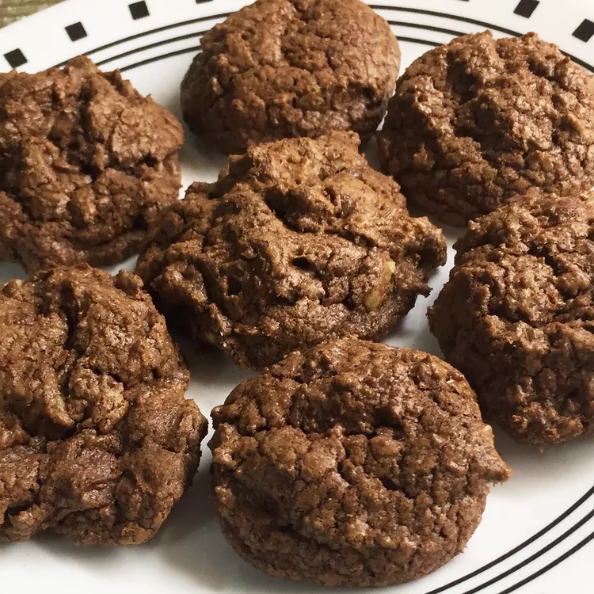

Preheat the oven to 350 degrees F (175 degrees C).
Beat sugar, butter, eggs, and vanilla in a large bowl until light and fluffy.
Combine flour, cocoa powder, baking soda, and salt in another bowl; stir into butter mixture until well blended. Mix in chocolate chips and walnuts. Drop spoonfuls of dough 2 inches apart onto ungreased cookie sheets.
Bake in the preheated oven just until set, 8 to 10 minutes. Cool slightly on the cookie sheets before transferring to wire racks to cool completely.
